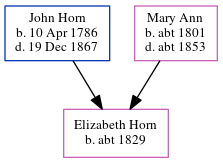

Elizabeth Emma Horn c1829 -
[ Home ] | [ Calendar ] | [ Surnames Index ] | [ Errors ] | [ Family History ]The child of John Horn (a labourer) and Mary Ann, Elizabeth Horn, the three times great-aunt of Nigel Horne, was born in Margate, Kent, England c. 18291 and baptised there on 29 Nov 1829. In 1851, she was living at her birthplace1 (the same place as her mother had been living in 1841).
Parents
- John was born on 10 Apr 1786
- Mary Ann was born c. 1801
Citations
- 1851 England Census Online publication - Provo, UT, USA: The Generations Network, Inc., 2005.Original data - Census Returns of England and Wales, 1851. Kew, Surrey, England: The National Archives of the UK (TNA): Public Record Office (PRO), 1851. Data imaged from the National (Relation to Head of House: Daughter)
Family Tree
Map
Generated by ged2site. Last updated on Jul 3, 2024